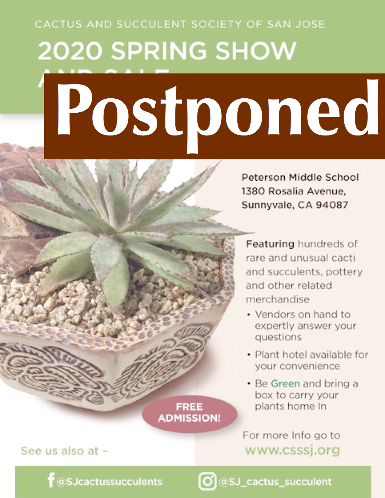

| Cactus & Succulent Society of San Jose | |||||
| CSSSJ Homepage | Welcome Visitors | Member’s Corner | Links of Interest | Picture Albums | |
The Cactus and Succulent Society of San Jose (CSSSJ) welcomes you to our website.
The CSSSJ is a diverse group of people with a mutual interest in and fascination for cacti and other succulent plants.
Succulent plants are among the most bizarre, beautiful, and varied in the entire plant kingdom. If you share our interest in these fascinating and unique plants, or just want to learn more, we invite you to join us at our meetings and have some fun.
Back by popular demand (and a statewide shelter-in-place order), Andrew Hazlett will, via a live video stream you can watch from home, host a meeting following up on his February talk about grafting.
With spring here, and a few extra hours to spend at home, it’s a great time to learn this cactus-grafting hobby for yourself. This time around, Andrew will take your requests and questions ahead of the meeting, and help you get started with grafting at home. Anything is open to discussion, from tiny seedling scions to giant root stocks. If he has it in his yard, he may chop it up on live video. Andrew will go into some more advanced techniques and dive deeper into Q&A.
Please ask him anything you’re interested in about grafting ahead of time, either via the club’s social media account, or by emailing Andrew at drewboogs@gmail.com. There will also be a live chat available, through which you can ask questions during the YouTube live stream presentation.
You can play the stream directly from this page, or jump to its home on YouTube for full-screen playback and other features.
Since we won’t be meeting in person, our mini show will be entering new territory… virtual! We’d like to invite members to share an image to share for our online show and tell. Whatever is spectacular in your garden right now is fair game, but only one per person please. The photos will be shown on our Facebook page. You can email your image to: sjcactussucculent@gmail.com.
In light of the threat posed by the COVID-19 pandemic, the Board of the CSSSJ has decided to postpone the Club’s Spring Show & Sale. We will monitor the situation closely in the days and weeks to come; if it improves sufficiently before the start of May, we will do our best to hold the Show & Sale in early summer.
If it does not, or if the logistics prove impractical — we’re unable to secure a venue or we’d conflict with other clubs’ events, for example — we will cancel the Spring Show & Sale entirely, and focus on the Fall instead.
This is not a decision we made lightly. We were, as always, eagerly anticipating the event. However, the safety of our members takes absolute precedence.
These are events the CSSSJ is not directly involved with, but which we think might be of interest to our members.
Every Wednesday - 9:00am to 11:30am
Edible Cacti Garden and Propagation Yard
Immanuel Lutheran Church
14103 Saratoga Avenue
Saratoga, CA, 95070
If you would like to learn more about this project, or volunteer to help, email stuartjrichardson@bountifulchurchyards.org for more information.